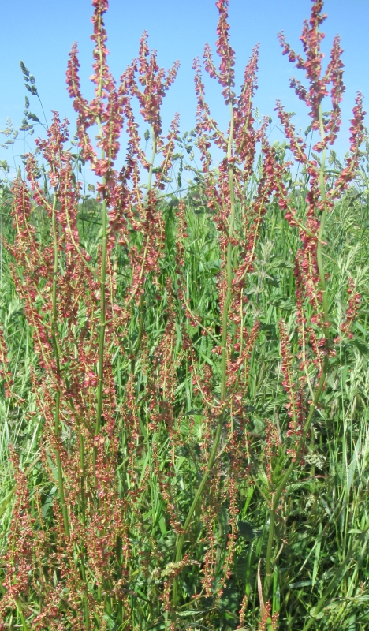

Îngrédgeins:
Halez les tigues dé la suthelle, lavez-la et trîlyiz-la en morcieaux. Dans eune sâsse-paine mouoyennement caude, laîssiz les fielles mouoillies fondre douochement. D'battez les jaunes d'oeu et dêmêlez d'auve lé chaud. Ajouôtez l'mêlange à la suthelle et caûffez sans bouoilli. M'ttez les crôtîns (fricachis dans du beurre) dans l'fond d'la turinne, et vèrsez la soupe sus. Ajouôtez l'péton d'beurre, et les bliancs d'oeu mio à mio - v'là tchi figu'tha dêliêment dans la caleu d'la soupe.
Viyiz étout: